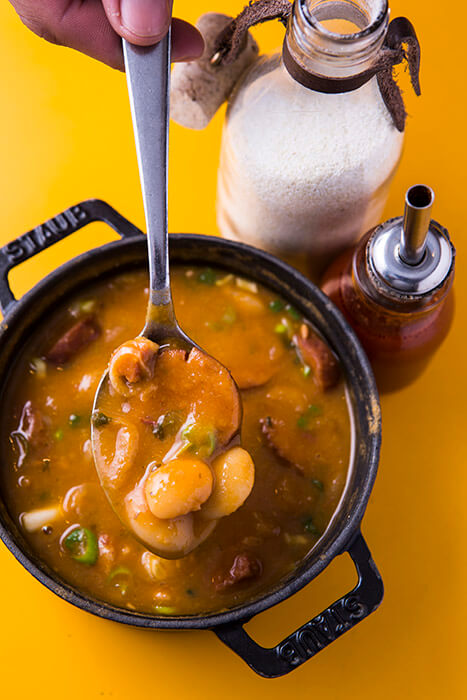
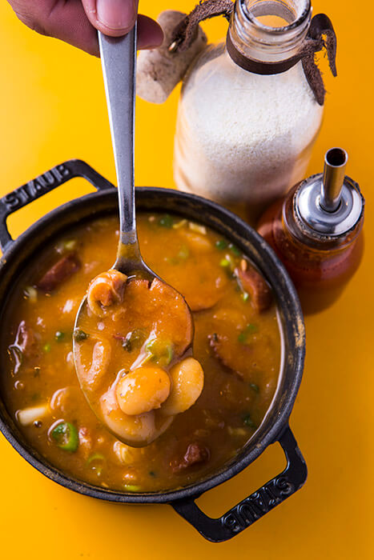
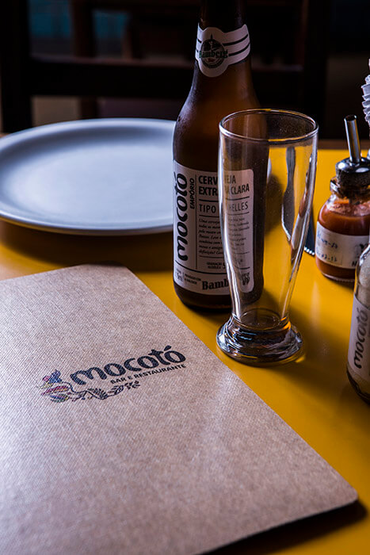
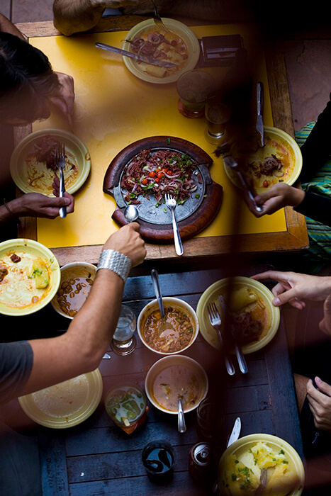
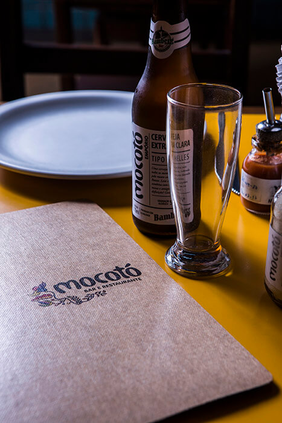
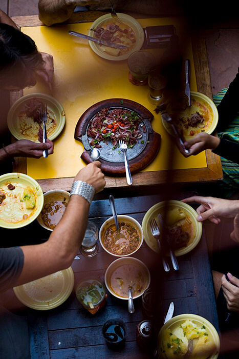

Mocoto is a restaurant of "sertaneja" food that is in Vila Medeiros, north zone of São Paulo. It was founded as a small store, in 1973, by Jose de Almeida and today it is directed by his son, Rodrigo Oliveira. Here happens the meeting of the traditional kitchen with the innovation proposed by Rodrigo Oliveira.
Among its main concepts it is the inclusiveness. An experience for everyone, in a restaurant that welcomes the most different palates, social and cultural levels. A kitchen that, as Rodrigo Oliveira defines, “It is made with the eyes on the world and the feet grounded in ‘Sertão’.”
The recognition of the work came from different directions. It is at the 43rd place in the list of the best restaurants in Latin America by the British magazine Restaurant, it received the label of Bib Gourmand by the Michelin Guide and the best Restaurant Good and Cheap by Veja São Paulo magazine.


 



 


